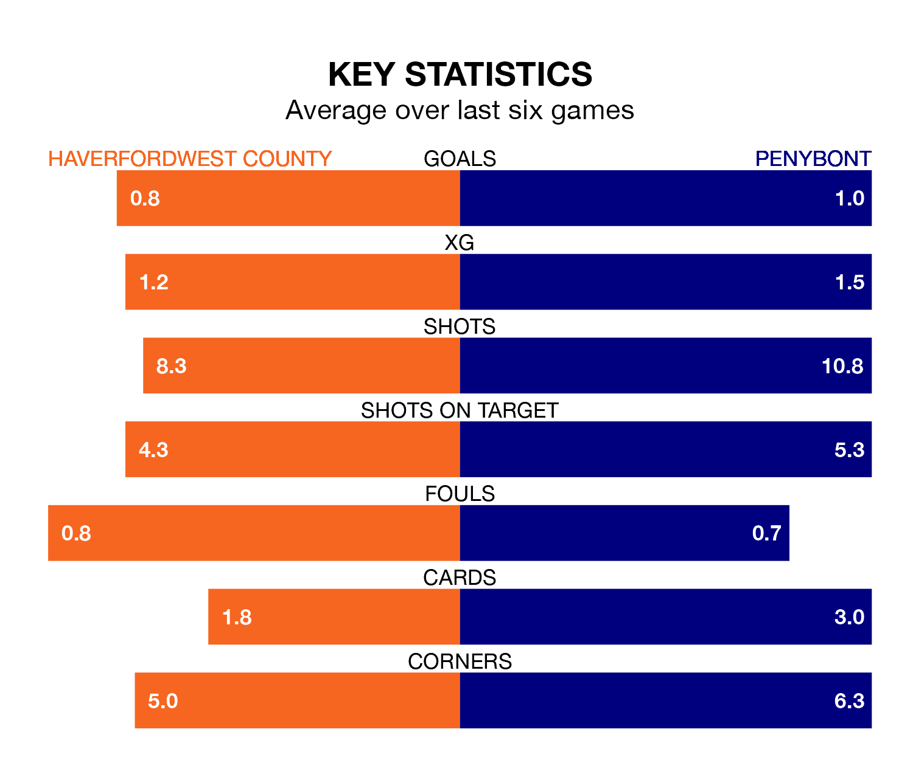

Relegation candidates Penybont face a challenge away against high-flying Haverfordwest County at the New Bridge Meadow Stadium on Friday.
Penybont are rooted to the bottom of the Welsh Premier League table, and have picked up nine wins and six draws in their 26 games to date.
The Bluebirds, meanwhile, are zero in the standings with 31 points, having won seven and drawn 10, and are 43 points behind table-toppers The New Saints.
In the last 10 years, Haverfordwest and Penybont have played each other on eight occasions. Haverfordwest won two of them, Penybont five, and they drew once.
On average, the Bluebirds scored 1.2 goals and Bont 2.2 in those matches.
Their last meeting was on October 17, when Haverfordwest won 3-2 at home.
Haverfordwest are in bad form in the Welsh Premier League, with no wins and four draws from their last six games.
With two wins and two draws over that period, Penybont's form is better – they have taken eight points from 18, compared to County's four.
With 31 goals in 26 games so far this season, the Bluebirds are the league's joint--1th-lowest scorers with 1.2 goals per game. But they are conceding fewer than average too, letting in 36 goals at a rate of 1.4 per game.
Bont are also below average scorers, with 1.3 goals per game, compared to a league average of 1.5. They have conceded 1.4 goals per game.
Haverfordwest's last match was on Saturday, a 0-0 draw against Colwyn Bay.
Penybont lost 1-0 against Pontypridd Town AFC last time out, also on Saturday.
Updated: 09:34 (UTC), 08/03/24